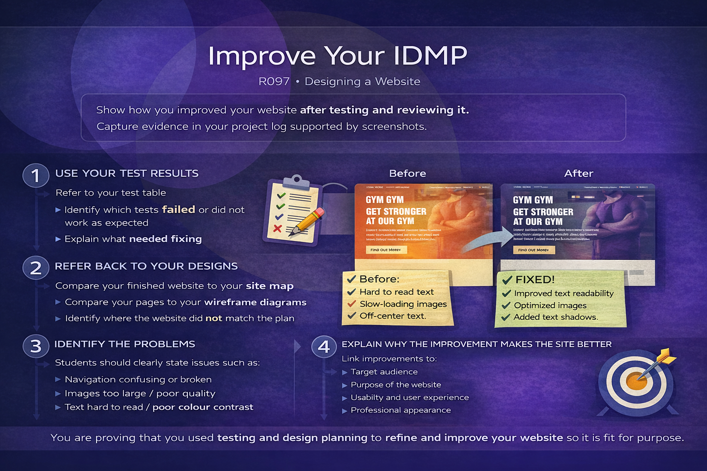

Task 3B(ii) Improvements (website)
Explain how you could improve your website.
Navigation improvements
Interactivity improvements
Usability improvements
Do not just say "make it better":
Explain exactly what would change and how that improves effectiveness.
Improving the IDMP (Your Website)
After testing and reviewing feedback, you must show how you improved your IDMP. This should be written up in your project log and supported with screenshots. The key idea is simple: identify a problem → make a change → explain why the change makes the website better.
What to improve
- Navigation: menus clear, consistent, working links, obvious “Home” route.
- Layout: spacing, alignment, grid/columns, readable structure (not cramped).
- Content quality: headings make sense, text is accurate, concise, audience-friendly.
- Interactivity: forms, quizzes, galleries, filters — works as intended.
- Accessibility: readable font sizes, contrast, alt text, clear buttons.
- Mobile/responsive: pages still look good on smaller screens.
- Consistency: same styles across pages (buttons, colours, fonts, header/footer).
- Performance: images optimised, pages load quickly, no broken media.
How to write it up (project log)
- State the issue (what wasn’t working / didn’t meet the brief).
- Show evidence (screenshot of the problem).
- Describe the change (what you edited in Dreamweaver / CSS / HTML).
- Show the result (screenshot after the improvement).
- Explain the impact: how it improves usability, appearance, accessibility, or suitability for the target audience.
Recommended structure for each improvement
Use this mini-template for each change you make. Repeat it for multiple improvements.
- Improvement title: (e.g., “Fixed navigation clarity on Home page”)
- Problem: what was wrong and why it mattered
- Evidence: screenshot of the issue
- Fix: what you changed (be specific)
- Outcome: screenshot of the improved version
- Why it’s better: link it to the brief and audience needs
Top tip
Don’t just say “I changed it because it looked better”. Explain why: “This makes the call-to-action clearer on mobile”, “This improves readability”, or “This makes navigation more consistent across pages”.